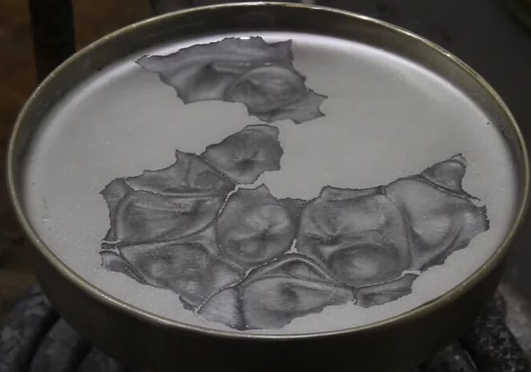

Calor desde abajo, fluido que sube y baja en celdas ordenadas
Poné una sartén con una capa fina de aceite sobre el fuego, a fuego muy bajo, y espolvoreá un poco de pimienta o de cacao en polvo. Con suerte, vas a ver que el polvo se ordena en celdas: zonas donde el aceite sube por el medio y baja por los bordes. Nadie las dibujó; aparecieron solas, porque el aceite de abajo está más caliente que el de arriba. Es la convección de Rayleigh-Bénard.

David Tong, de la Universidad de Cambridge, estudia una capa delgada de fluido entre dos placas, la de abajo caliente y la de arriba fría [1]. Mientras la diferencia de temperatura es chica, el calor pasa de abajo hacia arriba por conducción, sin que el fluido se mueva [1]. Pero esa situación puede volverse inestable: el fluido caliente de abajo es menos denso, tiende a subir, y el frío de arriba, más denso, tiende a bajar [1]. Cuando eso pasa, el calor se transporta también por convección, y el fluido se organiza en bloques llamados celdas de Bénard, dentro de cada una de las cuales el fluido sube y baja [1].
Que el fluido empiece a moverse no es automático. Un paquete de fluido caliente que sube recibe empuje, pero la viscosidad lo frena y, además, mientras sube pierde calor con los alrededores, y deja de ser más liviano [1]. Tong compara el tiempo que tarda el calor en difundirse con el tiempo que tarda el fluido en dar vuelta, y de esa comparación sale un número sin unidades: el número de Rayleigh [1].
Si el número de Rayleigh es chico, ganan la viscosidad y la difusión del calor, y el fluido se queda quieto. Si es lo bastante grande, gana el empuje, y aparece la convección [1]. Tong hace el análisis completo con condiciones de borde simplificadas y encuentra que la convección arranca cuando Ra supera 27π⁴/4, unos 660 [1]. En ese umbral, las celdas tienen un ancho de 2√2 veces el espesor de la capa [1]. A medida que Ra crece por encima del umbral, se vuelven inestables cada vez más formas de movimiento [1].
El ascensor de dos sentidos: pensá en un edificio con gente que quiere subir desde la planta baja, donde hace calor, y gente que quiere bajar desde el último piso, donde hace frío. Si hay una sola escalera, todos se chocan. Lo que se organiza solo es una serie de escaleras: por unas se sube y por otras se baja. Las celdas de Bénard son eso: el fluido caliente sube por un lado y el frío baja por otro.
En el análisis aparece un segundo número, el de Prandtl, que compara la viscosidad con la difusión del calor [1]. A diferencia de la mayoría de los números sin unidades, dice Tong, es una propiedad solo del fluido, no del flujo: vale alrededor de 0,7 para el aire y la mayoría de los gases, y alrededor de 7,5 para el agua [1].
La convección de Rayleigh-Bénard es, según Siegfried Grossmann, Detlef Lohse y Chao Sun, junto con el flujo entre cilindros que giran, la «drosófila» de la mecánica de fluidos: el sistema modelo con el que se ponen a prueba nuevas ideas, como las inestabilidades, la formación de patrones y la turbulencia [2]. La comparación es con la mosca de la fruta, el organismo modelo de la genética.
Pariente de Rayleigh-Taylor: en el fondo, la convección es una forma de la inestabilidad de Rayleigh-Taylor: un fluido más denso arriba de uno más liviano (un razonamiento a partir de los dos fenómenos). La diferencia es que acá la diferencia de densidad la crea el calor, y la difusión del calor y la viscosidad la frenan hasta que Ra supera el umbral [1].
Una capa de fluido calentada desde abajo puede quedarse quieta, conduciendo el calor, o empezar a moverse en celdas que suben y bajan. Quién gana lo decide el número de Rayleigh, que compara el empuje del fluido caliente con la viscosidad y la difusión del calor. Por encima de un umbral, el fluido se ordena solo en celdas de Bénard, y es uno de los sistemas modelo de toda la física de fluidos.
Pregunta para la comunidad: El número de Rayleigh crece con el cubo del espesor de la capa. Si en la sartén duplicás la cantidad de aceite, ¿la convección arranca con más o con menos diferencia de temperatura? ¿Cuánto cambia?